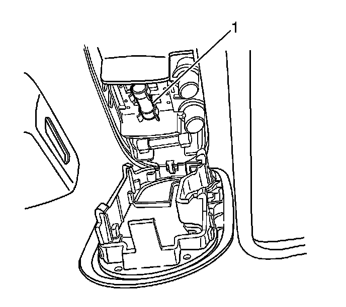

Cargo Lamp Replacement
Cargo Lamp Replacement
Removal Procedure
1. Pull down on the rear dome lamp in order to release the retaining clips.

2. Remove the bulb (1).
Installation Procedure
1. Install the bulb (1)
2. Locate the rear dome lamp assembly onto the headliner.
3. Push the rear dome lamp assembly in order the lock the retainers.